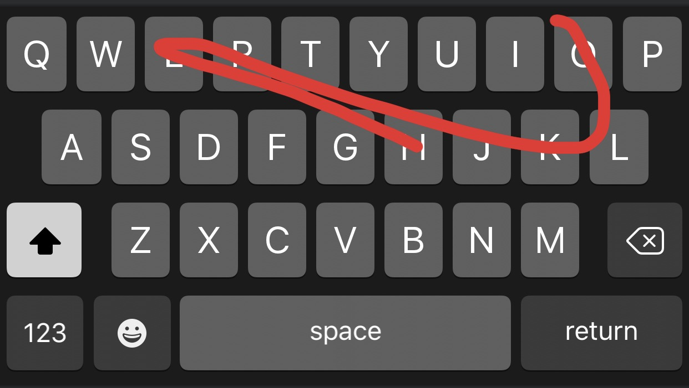

# Probability and Language Modeling ### Will Styler - LIGN 6 --- ### We've got corpora now! - Large collections of text - Now we can start to build *language models* - ... but there's always uncertainty --- ### Today's Plan - Probability - Surprisal and information - Conditional Probability - Using probability for language modeling - Predictive Text and Swype - Probability and Corpus Size --- ## What is probability? --- ## Probability - The degree of certainty that the value of a variable (or correct answer to a question) is one thing and not another - Humans tend to think about this as 'certain', 'impossible', 'likely', 'unlikely' - We express this as a proportion (e.g. 0.46, or '46% of the time') - 'p(event)' means 'the probability of event occurring' --- ### Sample Probabilities - `p(Heads)` from a fair coin: 0.5 - `p(Heads)` from a weighted coin: Not 0.5! - `p(6)` on a six sided die: 0.16666 - `p(6)` on a twenty sided die: 0.05 - `p(You winning Powerball)`: ~0 - `p(Will wearing gray pants)`: ~1 --- ### Probabilities can be calculated from observation - `p(heads)` in a coin of uncertain fairness? - `p(somebody's wearing a red shirt in class)`? - `p('yeet')` in a corpus? - `p('rolex')` in a corpus? --- ## Surprisal and Information --- ### Some things in life are surprising - What's would be a surprise? - What's would be completely unsurprising? - 'Surprise' comes when something we judged to be improbable happens - When we're surprised, we usually *gain information about the world* --- ### Defining Surprisal and information - Something which is completely certain happening... (P = 1) - ... is completely unsurprising (surprisal = 0) - ... is completely uninformative (information = 0) - Something which happens, despite seeming impossible... (P = 0) - ... is infinitely surprising (surprisal = ∞) - ... is infinitely informative (surprisal = ∞) - Everything else is in the middle (0 < P < 1) --- ### What's the surprisal of... - 'the' occurring in an English document - The sun rising tomorrow - Will wearing non-gray pants - Will cancelling the final project and giving everybody A's - 'mel-frequency cepstral coefficient' occurring in a document - 'mel-frequency cepstral coefficient' occurring in a TikTok - Winning Powerball --- ### Now we can quantify how likely a given event is - How surprising it is - ... and how informative it is! --- ### We can also estimate our uncertainty - "How likely am I to be surprised here?" - The sun will rise tomorrow - Will will wear gray pants Wednesday - 10 heads in a row while flipping a weighted coin - 10 heads in a row while flipping a fair coin - The coin landing on edge after being flipped - (Apparently [1 in 6000 tosses for a nickel!](https://ui.adsabs.harvard.edu/abs/1993PhRvE..48.2547M/abstract)) - The next 20 sided dice roll being 17 --- ## Conditional Probability --- ## Conditional Probability 'What is the probability of this event, given that this other event occurred?' - `p(event|other event)` means 'the probability of an event occurring, given that the other event occurred' --- ### Probabilities are often conditional on other events - What's `p(pun)`? What about `p(pun|Will)`? - What's `p(fire|smoke)`? What about `p(smoke|fire)`? - This is not (always) symmetrical - What's `p(Will calls in sick)`? What's `p(Will calls in sick|he did last class)`? - What's `p(heads)` on a fair coin? What's `p(heads|prior heads)`? - Probabilities are not always conditional! --- ### Differences in conditional probabilities are information! - Does the change in conditioning event affect the observed probability? - One event's probability **depends** on the other's! - If so, there's an informative relationship! - Two events have "mutual information" if there's some relationship - Language modeling is about finding **informative relationships** between linguistic elements! --- ### Differences in conditional probability let us model language! - `p('you'|'how are')` vs. `p('dogs'|'how are')` - `p(adjective|'I am')` vs. `p(noun|'I am')` - `p(good review | "sucks")` vs. `p(bad review | "sucks")` --- ## Using Probability for language modeling --- ### Knowing probability of any individual word is helpful! - What tasks could be done knowing just the probability of a given word? --- ### Knowing the mutual information of linguistic elements helps to solve problems! - When we do machine learning, we learn a large set of dependent probabilities among linguistic elements! - We're trying to **predict** one variable by **observing** others! --- ### Automatic Speech Recognition - What kinds of probability modeling could help us? - What would we predict? What could we observe? --- ### Text-to-speech - What kinds of probability modeling could help us? - What would we predict? What could we observe? --- ### Spelling correction - What kinds of probability modeling could help us? - What would we predict? What could we observe? --- ### Document classification - "Is this a tweet? Technical report? News article? Sports article? Product Review?" - What kinds of probability modeling could help us? - What would we predict? What could we observe? --- ### Sentiment Analysis - "Does the person talking about this product (e.g.) like it?" - What kinds of probability modeling could help us? - What would we predict? What could we observe? --- ### Studying the racialization of language - What kinds of probability modeling could help us? - What would we predict? What could we observe? --- ### Studying the racialization of language (cont.) - `p('the'|article about a white athlete)` vs. `p('the'|article about a black athlete)`? - We would expect this to be similar - `p('wife'|article about a white athlete)` vs. `p('wife'|article about a black athlete)`? - This is NOT similar, weirdly! - It must be that the use of some words is predictable by athlete race! - 'Athlete race is informative for word use!' --- ### The most common use of word probability in our lives... - Predictive text! --- ## Predictive Text and Language Probability --- ### Every word in language is informative about the next - When you read enough sentences, you get a sense of which words follow each other - Imagine somebody's writing an email... --- - Hi - How - are - you - doing - today? - I - hope - you - are - penguin - well. --- ### Phrasal information decreases surprisal - Never - gonna - give --- <video data-autoplay="true" src="video/lecturevid.mp4"></video> --- ### Predictive text just formalizes this - "Given the last N words, what is the most likely word?" - "It's... on... the... syllabus." - Some variants will modify guesses based on previous words - "You're cute" vs. "Your cat" --- > Testing the first time and then it is fine but it’s a nice little app but it does have to a lot cheaper than it but it’s fun and it makes it very interesting and it is a great idea for a great time with good people to play for a bit and a great way home fun fun and good way cheaper cheaper and cheaper than a free version for a free app but --- > Hi I hope you’re doing alright girl you are so nice to you have fun I hope you’re having fun I’m sorry I’m not gonna was a nice night I just wanna --- ### Swype/Swipe-to-type - 'Swype' was an app developed by Nuance Communications - Move your finger across the keyboard to type - Choose the most probably combination of characters given the curve - Later stolen by EVERYBODY --- - Cat ---  - Hello --- <img class="r-stretch" src="comp/swype_science.jpg"> - Science --- - Linguist --- - Deontology --- ### Swype requires a language model! - Swypes are not precise enough to recover all characters in the proper order - You must rule out non-word combinations - ... and guess the most likely candidate! --- ### Probability models are helpful for NLP! - They allow us to utilize the probability of words - They allow us to model the mutual information of word and its neighbors - They allow us to do real language understanding work - They allow us to make good guesses about language! --- ## How much data do you need? --- ### How much data do you need to find... - p(Will wears gray pants) - p(Will makes a pun in class) - p(Will has to speed up at the end of class) - p(The projector doesn't work) - p(Will misses class) - p(Will wins Powerball) --- ### Probability estimates get better with more data! - ... and you need more data to correctly estimate rare events - So, this is why we want huge corpora! --- ### Wrapping up - Probability, Information, and Surprisal are important concepts - Conditional probabilities help us model the world - Language is very effectively modeled with conditional probabilities - Predictive text and Swype are examples of this - Bigger corpora give better probabilities! --- <huge>Thank you!</huge> <small>... and thank you to Eric Meinhardt, on whose talk this is partially based </small>